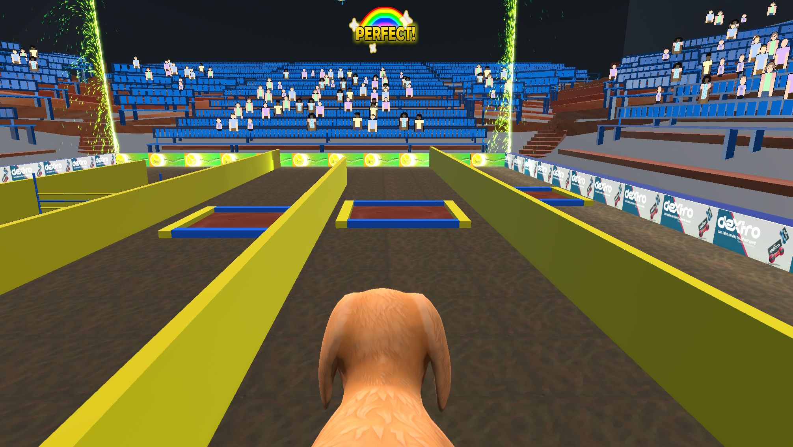
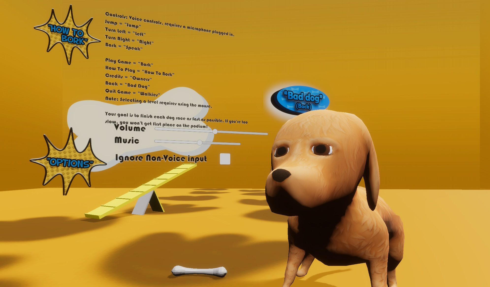
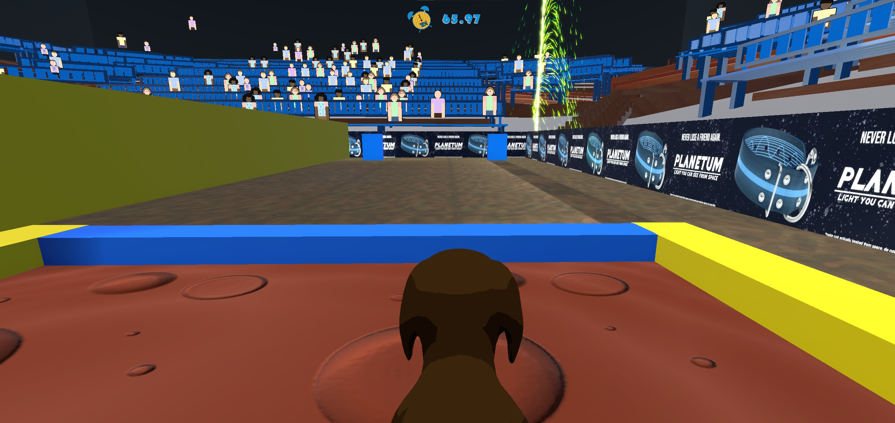

Yeah, Dog!
Yeah, Dog! Is an experimental game prototype created for a university assignment in a team of 6, consisting of 3 programmers, 1 designer and 2 artists. I created the initial idea and prototype, programmed the movement system, the various obstacles, the voice control, and created the particle effects & shaders. I also created renders of the game for use in posters etc. The project was completed in 2023, during my second year of university, using Unity.
The player attempts to guide a dog around a dog agility course, but the dog only responds to commands voiced out loud! There are several commands, including left, right, jump, and play dead.

Three levels are featured in the game, each with their own unique obstacles and differing levels of challenge. Obstacles include the dog tunnel, trampolines which launch the dog upwards, hurdles, and pits of mud which slow the dog down. I created a flipbook-based bubbling mud shader in shadergraph, as well as a TV screen shader which rendered individual pixels and swapped between different ads created by our wonderful 2D artist, Rosie.
We were invited to show off Yeah, Dog! at COMX, where lots of people played it and the fastest on the leaderboard at the end of the day went home with the grand prize (some choccies). It was great fun to watch the different stratagies people came up with. Some tried to be as calm and monotone as possible before eventually giving up and yelling commands, others just shouted at the top of their lungs from the get go!
One mechanic which drastically improved the playability of the game is the addition of the dog rubber-banding back into the center of the path if he was directed too far off course.
